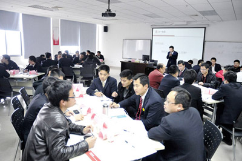

上海谷邦致力于帮助员工成长
近日，上海谷邦下发了关于开展部门领导后备人才推选及年度优秀管理人员奖、年度优秀员工奖评选活动的通知，进一步明确了公司的用人机制和年度优秀人物评选的标准、范围和奖励办法。
早在上海谷邦成立之初，公司就提出"员工是企业的第一要素，是企业持续高速发展的原动力"的理念；作为国内工业输送机械设备制造的引领者，公司非常重视人才的培养，多次举办各类培训班：为员工购买教材，组织学习，更是成为上海谷邦人力资源的重要举措。对于能力突出，并取得优异成绩的员工，公司从不吝于提拔，并给予极高的荣誉。

追求荣誉是一个人自我实现的深层需求，如同"世界杯"对足球运动员的吸引力一样，"年度优秀人物"产生的正面效应不可估量。"年度优秀人物"当选后，往往伴随着晋升和奖励，一方面，对于做出贡献的员工，公司的回报丰厚而迅速；另一方面，公正、公开的评选机制以及丰厚的回报，让所有谷邦人看到了参与的希望，这也是谷邦人工作始终乐观的基础所在。年轻而充满希望的上海谷邦吸引到大批年轻人，而公司不拘一格擢用人才的制度，又最大限度地激发了年轻人的工作热情。
上海谷邦所要做的，不只是支付足够的薪水，还要为员工构筑一方事业平台，帮助员工获得职业生涯的成功。这是谷邦的责任，也是帮助员工成功的要义所在。